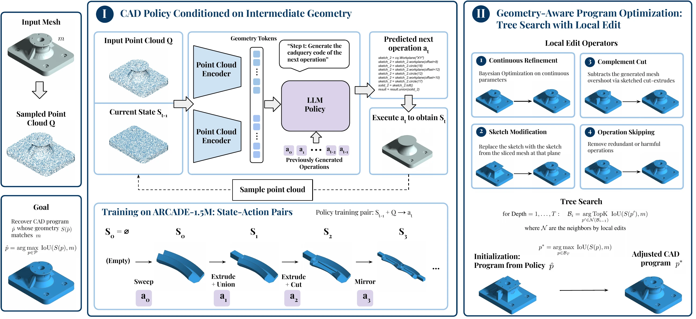

NeurIPS 2025
ICML 2026
ICML 2026
ghadinehme.com/publications
Recovering executable CAD programs from 3D meshes is challenging due to the compositional nature of CAD construction and the interaction between discrete modeling choices and continuous parameters. Many learning-based methods predict complete programs in a single pass and rely predominantly on sketch-extrude representations, limiting operation diversity and opportunities to correct geometric errors during reconstruction.
We introduce StepCAD, a generative optimization approach that combines a state-conditioned CAD policy with geometry-guided search. Given an input mesh, the policy predicts construction actions conditioned on both target and intermediate geometry, and an IoU-guided tree search refines the resulting program through local edits. We also introduce ARCADE, a large-scale dataset of executable CAD programs spanning diverse operations, long construction sequences and dense intermediate states.
Experiments across multiple CAD reconstruction benchmarks show that StepCAD achieves state-of-the-art geometric reconstruction accuracy with consistently high validity, with particularly large gains on complex shapes.
A Qwen2.5-Coder-1.5B policy writes the CadQuery program one operation at a time. At every step it sees the target point cloud and the point cloud of the shape built so far (both encoded by a shared Point-MAE), predicts the next operation, and the CAD kernel executes it.
A beam search (K = 2) walks the program in execution order and tries four local edits at every operation: refine parameters, edit sketch (profile sliced from the mesh), complement cut and skip operation. Candidates are executed and ranked by IoU against the input, so the cost stays linear in program length.

Policy steps (I), then search edits (II): every step is a real CadQuery program, executed and scored by IoU against the target. Drag to orbit; click a step to jump.
CADBench meshes (grey) and the CadQuery programs StepCAD-3.5M recovers for them (blue). Click a part to inspect it in 3D; drag to orbit, scroll to zoom.
@article{nehme2026stepcad,
title={StepCAD: Mesh-to-CAD Code Generation via LLM Policy and Geometry-Guided Search},
author={Nehme, Ghadi and Ahmed, Faez},
journal={arXiv preprint arXiv:2610.03799},
year={2026}
}